148 Paper Rice - Spr

149 Okaeri Japanese
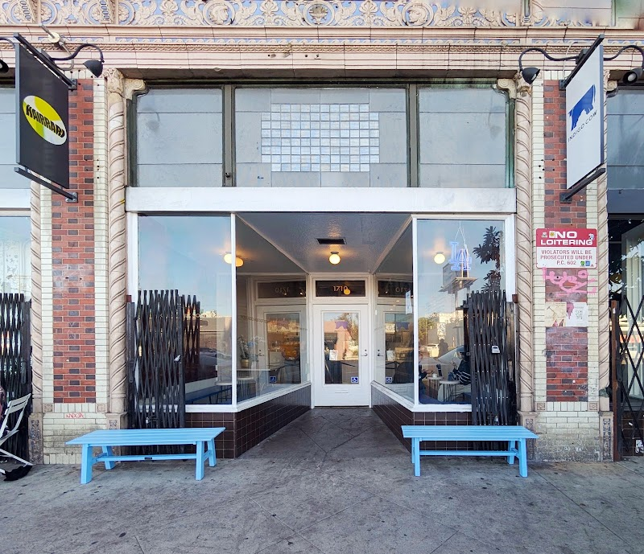
150 Indigo Cow

151 Proof Bakery
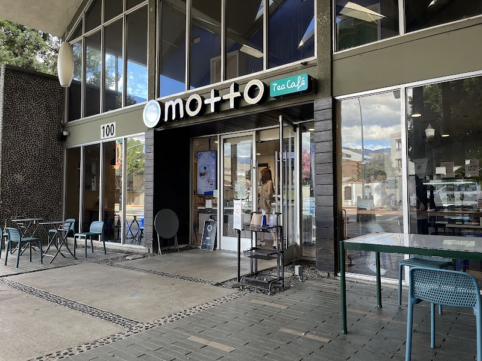
152 Motto Tea Cafe
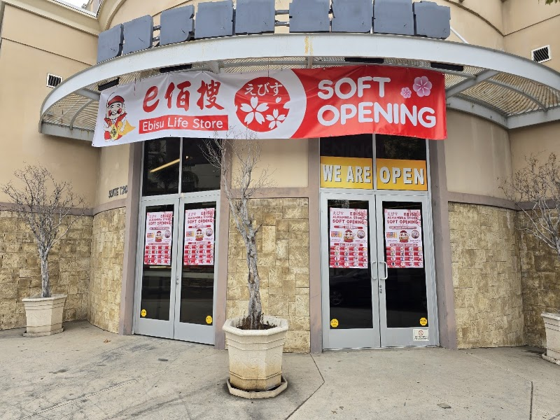
153 Ebisu Life Store

154 ALittle-Tea
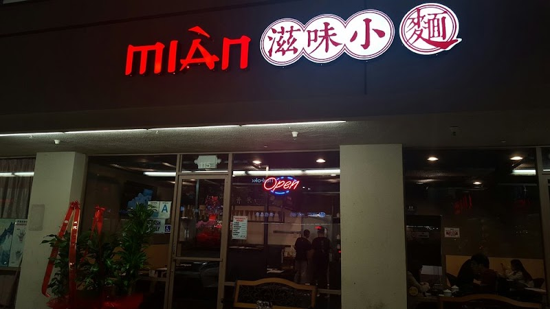
155 Mian
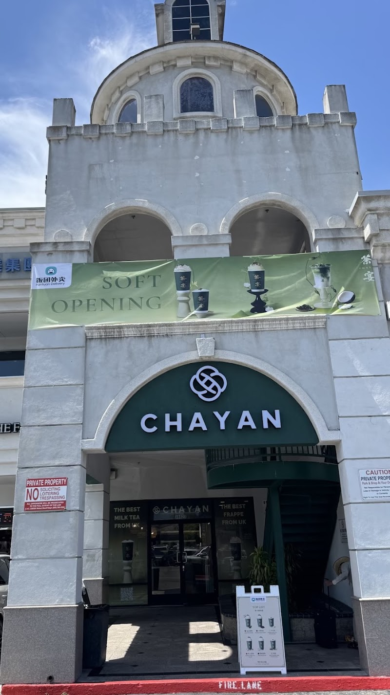
156 CHAYAN
157 Unique Green
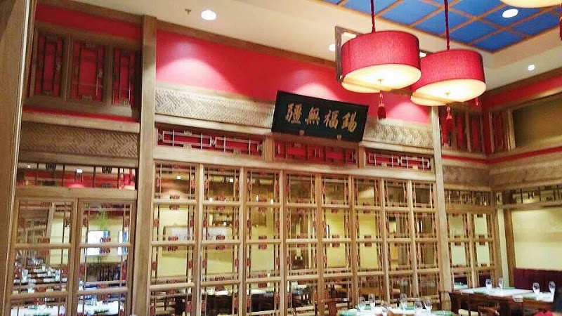
158 Bistro Na's
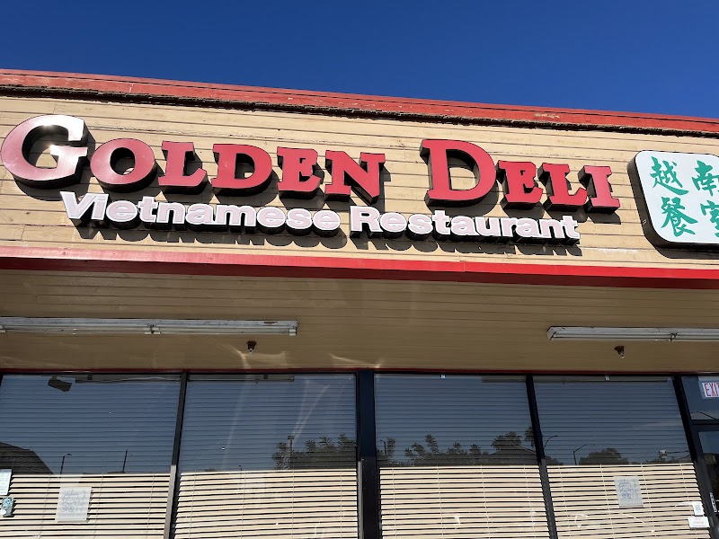
159 Golden Deli
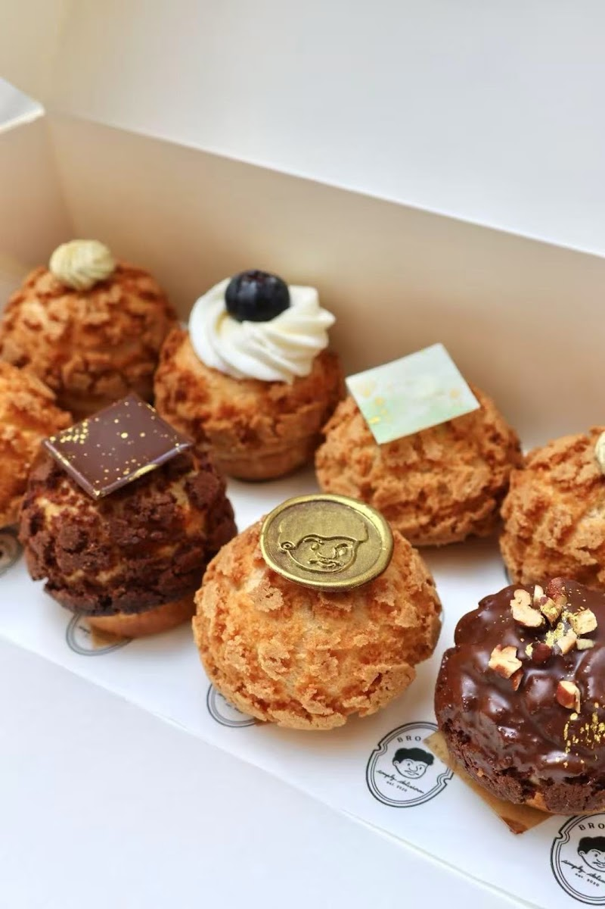
160 Browned
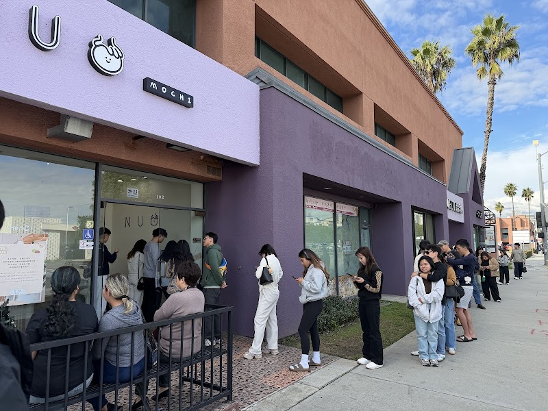
161 Nuo Mochi

162 Chong Qing Speci
163 Lao Ma Tou Hot P
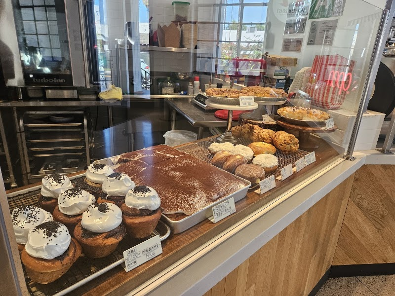
164 Baking With Ish
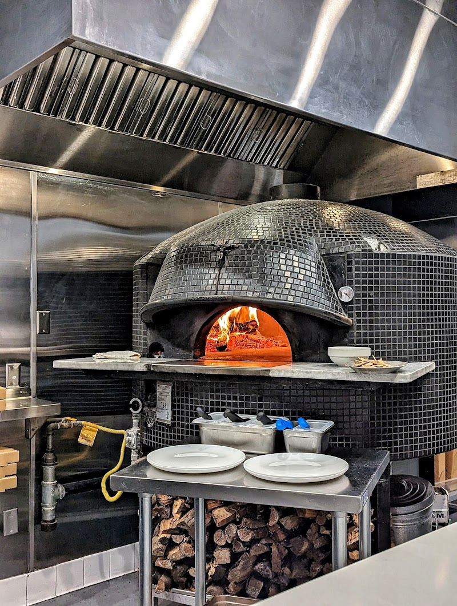
165 Pizzeria Sei
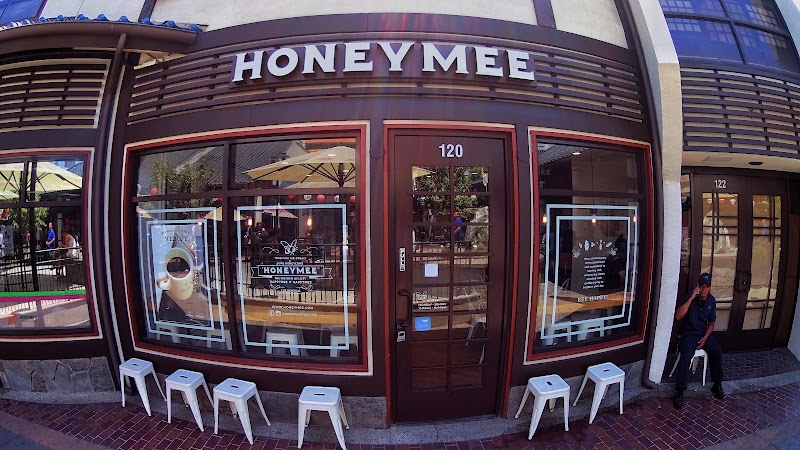
166 Honeymee
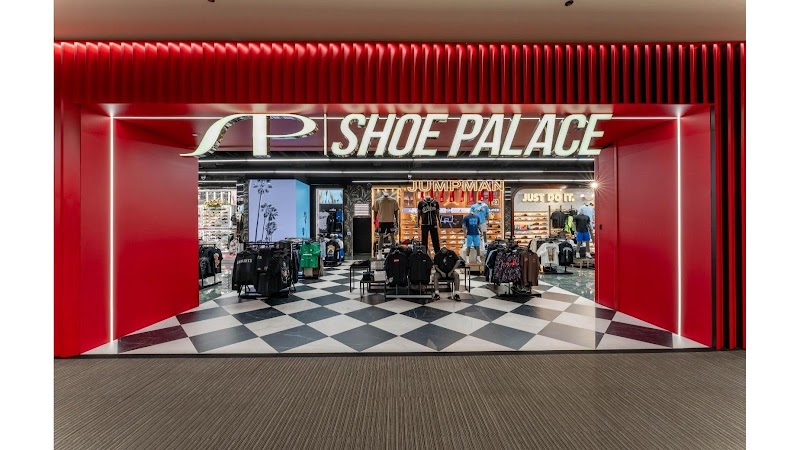
167 Shoe Palace
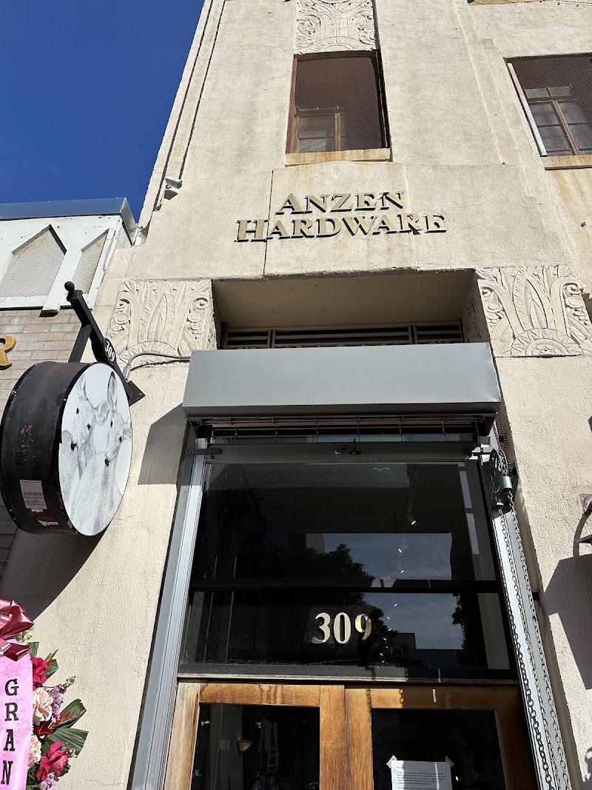
168 Little Tokyo Tab